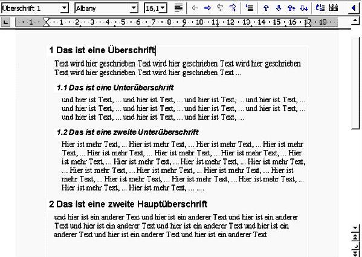
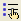
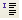

| [zurück] | [Hauptmenü] |
[weiter] |
OpenOffice.org Textdokumente
-
Gliederung und Nummerierung
Sinn einer Gliederung ist, mehrere Überschriften mit
aufsteigenden Zahlen oder Buchstaben zu bezeichnen um dadurch
direkt auf eine Überschrift verweisen zu können und
man bringt eine gewisse Ordnung in das Dokument. Der
Clou ist, dass Überschriften (oder prinzipiell gesehen
Absätze) automatisch durchnummeriert werden können.
Fügt man im Nachhinein einen Absatz oder ganze Kapitel
ein, aktualisiert sich sofort alles Nachfolgende!
Um eine Gliederung zu erstellen, muss man OpenOffice.org zuerst mitteilen, welche Absätze die Überschriften sind. Hierfür gibt es wie schon erwähnt die Formatvorlagen. Dabei ist es so, dass standardmäßig mit "Überschrift 1" die oberste Überschriftsebene gemeint ist, mit "Überschrift 2" die darunterliegende, usw. Sollen nun diese Überschriften mit Zahlen nummeriert werden, so geht man in das Menü: Extras>Kapitelnummerierung. Dort kann man in der Registerkarte Nummerierung angeben, auf welche Weise welche Ebene der Überschrift nummeriert werden soll. Man geht also so vor, zuerst die entsprechende Ebene links auszuwählen und dann bei "Nummer" den gewünschten Typ angibt (insbesondere also nicht "Keine"). Diese Nummerierung ist dann bei allen gewählten Überschriften dokumentenweit sichtbar und aktualisiert sich - wie gesagt - automatisch.
Als besonders praktisch erweist es sich dann, diese Gliederung zum Beispiel in ein Inhaltsverzeichnis zu übernehmen. Das wird über das Menü mit Einfügen>Verzeichnisse>Verzeichnisse ... erledigt.
Um eine Gliederung zu erstellen, muss man OpenOffice.org zuerst mitteilen, welche Absätze die Überschriften sind. Hierfür gibt es wie schon erwähnt die Formatvorlagen. Dabei ist es so, dass standardmäßig mit "Überschrift 1" die oberste Überschriftsebene gemeint ist, mit "Überschrift 2" die darunterliegende, usw. Sollen nun diese Überschriften mit Zahlen nummeriert werden, so geht man in das Menü: Extras>Kapitelnummerierung. Dort kann man in der Registerkarte Nummerierung angeben, auf welche Weise welche Ebene der Überschrift nummeriert werden soll. Man geht also so vor, zuerst die entsprechende Ebene links auszuwählen und dann bei "Nummer" den gewünschten Typ angibt (insbesondere also nicht "Keine"). Diese Nummerierung ist dann bei allen gewählten Überschriften dokumentenweit sichtbar und aktualisiert sich - wie gesagt - automatisch.
Als besonders praktisch erweist es sich dann, diese Gliederung zum Beispiel in ein Inhaltsverzeichnis zu übernehmen. Das wird über das Menü mit Einfügen>Verzeichnisse>Verzeichnisse ... erledigt.
Beispiel
Dieses Beispiel zeigt eine Gliederung in zwei Überschriftsebenen.

Für eine Nummerierung setzen Sie den Cursor in
den betreffenden Absatz (zum Beispiel für eine Auflistung) und
klicken Sie auf das Symbol für Nummerierung in der Objektleiste.
Was ist geschehen?
Das Textverarbeitungsprogramm beginnt an dieser Stelle mit der Nummerierung, es fügt also eine 1. vor den Absatz. Wenn Sie jetzt nach diesem Absatz einen weiteren mit der
Das Textverarbeitungsprogramm beginnt an dieser Stelle mit der Nummerierung, es fügt also eine 1. vor den Absatz. Wenn Sie jetzt nach diesem Absatz einen weiteren mit der
Eingabe-Taste beginnen, so erhält er eine 2.
usw...
Doch damit nicht genug:
-
Man kann Unterpunkte mit dem Icon für "Mit Unterpunkten runter" den Absatz einrücken und eine Unternummerierung beginnen.
-
Es lassen sich viele Darstellungsoptionen für die Aufzählungen aussuchen. Hierfür das Icon  für die Optionen drücken! Besonders hinweisen möchte ich in diesem Optionendialogfeld auf die Registrierkarte Gliederung. Es lässt sich da die Art der Bezeichnung der Unterpunkte bestimmen (nach dem Alphabet, mit Zahlen oder gar Römischen Ziffern). Auch ist die Registrierkarte Optionen wichtig (damit lässt sich innerhalb einer Nummerierung ein Sprung einbauen oder die genaue Art und Form der Nummerierung bestimmen).
- Wichtig ist auch das
 Icon: es fügt einen Absatz ein,
ohne dass dieser ein Teil der Gliederung ist - d.h.
er hat keine Nummer oder sonstige Bezeichnung!
Hinweis
- Möchten Sie auch die andere(n) Objektleiste(n) sehen, die für andere Formatierungsoptionen da waren, so müssen Sie rechts auf das blaue Dreieck klicken.
- Wollen Sie die Formatierung der einzelnen Überschriftsebenen ändern, so benützen Sie hierfür die Formatvorlagen!